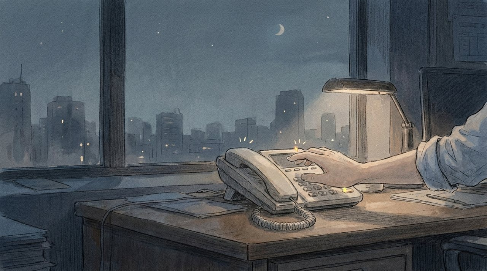
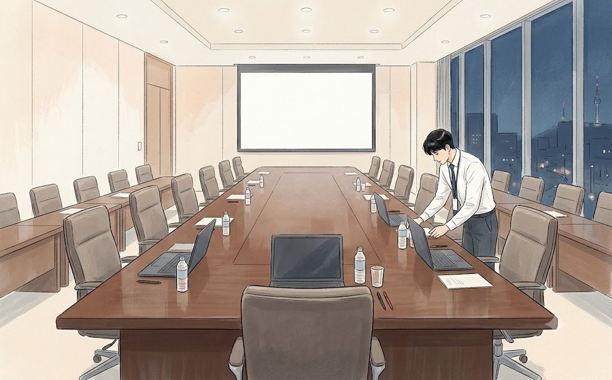
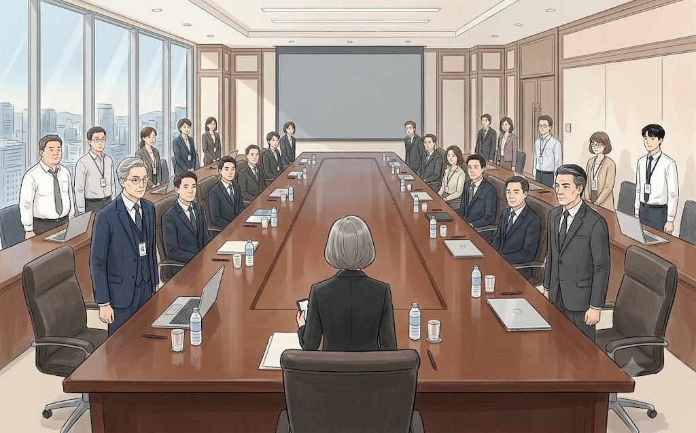

새벽 2시 14분. 청연타워 29층.
화이트보드에는 질문이 열한 개 적혀 있었다. 열 개를 적으라고 했는데, 한지석이 하나를 더 적었다. 누구도 지우자고 하지 않았다.
'우리는 왜 이렇게 됐습니까.'
맨 위의 그 문장은 몇 시간째 대답 없이 거기 있었다.
"편의점 다녀왔다."
백승원이 비닐봉지 두 개를 들고 들어왔다. 컵라면 넷, 삼각김밥 여덟, 숙취해소제 넷, 그리고 초코우유 하나.
"초코우유는 누구 거예요?"
"우진이 거. 너 아직 애기잖아."
"저 서른여섯인데요."
"그러니까 애기지."
백승원은 웃으며 컵라면 뚜껑을 하나씩 뜯었다. 물을 붓는 동안 그는 회식 자리 이야기를 했다. 조영석 부장이 결국 아파트 시세표를 휴대폰으로 돌려 봤다는 것. 막내들이 2차 노래방에 가려다 '5인 이상'에 걸려 둘로 나뉘어 옆방끼리 벽을 두드리며 떼창을 했다는 것.
그 이야기를 들으며 한지석은 처음으로 웃었다. 이우진은 알았다. 백승원이 편의점에 간 건 라면 때문이 아니었다는 걸. 30분 동안 자리를 비워, 상무 앞에서 굳어 있던 공기를 바꿔 놓으려던 거였다.
권재혁은 회의실 구석에서 혼자 노트북을 보고 있었다. 컵라면은 손대지 않았다.
"상무님, 드시면서 하세요."
"먼저들 먹어요."
그는 화면에서 눈을 떼지 않았다. 화면에는 한지석이 한 시간 반 만에 뽑아낸 숫자가 떠 있었다. 지난 1년, 청연 브랜드몰의 매출. 코로나로 모두가 온라인으로 몰려간 해였다. 숫자는 올랐다. 문제는 남들이 훨씬 더 많이 올랐다는 것이었다.
'바깥의 적.'
한지석은 보고서 두 번째 장에 그 표를 넣었다. 청연과 소다랩, 그리고 소다랩을 바짝 쫓는 신생 인디 브랜드 민트앤(MINT&)과 데이브리즈(DAYBREEZE)의 온라인 성장률. 막대그래프를 그리자 청연의 막대가 가장 짧았다. 남의 막대 옆에 서 있으니 자기 막대가 더 짧아 보였다.
새벽 3시. 사무실 전화가 울렸다. 이 시간에 울리는 유선 전화는 좋은 소식일 리 없었다. 이우진이 받았다.

"29층이시죠? 보안팀 야간 근무 탁민규입니다. 그 층에 불이 계속 켜져 있어서요. 혹시 무슨 일 있으세요?"
"아뇨, 일하는 중입니다."
"...이 시간에요?"
"네."
"금요일 밤인데요?"
"네."
수화기 너머에서 잠깐 침묵이 흘렀다.
"그럼 출입 기록에 '긴급 업무'로 남겨 둘게요. 사유는 뭐라고 적을까요?"
이우진은 화이트보드를 봤다. '우리는 왜 이렇게 됐습니까.'
"...보고서요. 그냥 보고서라고 적어 주세요."
전화를 끊자 백승원이 킥킥 웃었다.
"보안팀이 우리보다 정상이네."
새벽 3시 반. 한지석은 결론 문장을 처음으로 고쳤다.
'온라인 성장 둔화는 경쟁 심화와 시장 포화에 따른 구조적 현상임.'
권재혁이 읽고 말했다.
"그거, 사장님이 제일 싫어하는 문장이에요."
"왜요?"
"우리 잘못이 아니라는 문장이잖아."
한지석은 지웠다. 다시 썼다.
'온라인 성장 둔화의 핵심 원인은 당사의 실행 속도와 고객 경험 부족임.'
이번에는 백승원이 고개를 저었다.
"지석아, 이건 너무 세. 이렇게 쓰면 첫 회의부터 우리 팀이 범인 돼."
"그럼 어떻게 써요?"
"범인은 없는데 해결책은 있는 문장."
"그런 문장이 어딨어요."
"그러니까 보고서가 어려운 거지."
새벽 4시 50분. 세 번째 결론.
'온라인 성장률 회복을 위해 고객 경험 개선을 최우선 과제로 설정하고, 4주 내 실행안을 보고드리겠음.'
권재혁은 한참 들여다보다가 말했다.
"4주는 길어요. 2주로 바꿔요."
"2주 안에 뭘 할 수 있는지 아직 모릅니다."
"그건 다음 주에 알면 돼요. 내일 사장님이 듣고 싶은 건 '언제'예요."
한지석은 '4'를 지우고 '2'를 썼다. 숫자 하나를 바꾸는 데 1초가 걸렸다. 그 1초가 앞으로 2주를 어떻게 바꿔 놓을지, 그는 알고 있었다.
권재혁은 그다음에 보고서 순서를 뒤집었다. 서른 장짜리 보고서의 결론은 원래 스물아홉 번째 장에 있었다. 시장 현황, 경쟁사 분석, 내부 현황, 원인 분석을 다 지나야 겨우 나오는 자리였다.
"결론이 왜 맨 뒤에 있어요?"
"논리 순서대로 쌓다 보니..."
"사장님은 스물아홉 장을 넘기기 전에 덮어요. 첫 장에 결론. 둘째 장에 진단. 셋째 장에 대안. 넷째 장에 그걸 하면 뭐가 얼마나 좋아지는지. 다섯째 장에 누가 언제까지 뭘 하는지. 여섯째 장에 회사에 요청할 것. 나머지는 전부 부록."
"요청할 것도 넣어요?"
"넣어야죠. 우리 힘으로 안 되는 게 있잖아요. 사업부 팝업, 보안 심의. 그걸 사장님 앞에서 말 안 하면, 다음 주에 우리가 못 한 이유가 돼요. 그럼 그건 남 탓이 되고."
한지석은 장 순서를 바꿨다. 서른 장 중 여섯 장이 앞으로 나왔다. 나머지 스물네 장은 '부록'이라는 간지 뒤로 갔다. 새벽 내내 만든 분석의 대부분이 부록이 되는 순간이었다. 이우진은 그게 조금 억울했다. 한지석은 아무렇지 않은 얼굴이었다. 연구소에서 3년 동안 쓴 실험 노트도 결국 제품 상세페이지 한 줄이 되었다고, 그는 나중에 말했다.
그제야 권재혁이 컵라면을 집었다. 물을 부은 지 세 시간이 지난 라면이었다. 면은 국물을 다 빨아들여 덩어리가 되어 있었다. 그는 그걸 아무렇지 않게 먹었다.
"상무님, 새로 하나 끓여 드릴까요?"
이우진이 물었다. 권재혁은 고개를 저었다.
"식은 라면이 제일 맛있어요. 홍콩에 처음 갔을 때 3년 동안 매일 밤 이걸 먹었어요. 회사에서 한국 사람은 나 하나였거든."
이우진은 처음 듣는 이야기였다. 권재혁은 외국계에서 화려하게 영입된 임원이라고만 알려져 있었다.
"그때 배운 게 하나 있어요. 좋은 물건이라고 팔리는 게 아니에요. 팔리는 구조가 있어야 팔려요."
그는 마지막 면 덩어리를 젓가락으로 집어 올렸다.
"우리 회사는 물건은 좋아요. 그런데 구조가 없어요."
그 말을 하고 그는 다시 노트북 앞으로 돌아갔다. 이우진은 빈 컵라면 용기를 치우다가 백승원과 눈이 마주쳤다. 백승원이 작게 고개를 끄덕였다. 저 사람, 생각보다 괜찮은 사람이야, 라는 뜻 같았다.
그사이 이우진은 40분쯤 회의실 소파에서 잠들었다. 깨어났을 때 그의 몸 위에는 백승원의 코트가 덮여 있었다. 백승원은 셔츠 바람으로 출력할 자료의 순서를 맞추고 있었다.
새벽 5시. 리허설이 시작됐다.
"내가 사장님 할게."
백승원이 넥타이를 풀어 머리에 두르듯 감았다가, 이건 아니다 싶었는지 다시 풀었다. 그는 테이블 끝에 서서 목소리를 낮게 깔았다.
"권 상무. 온라인 매출이 올랐다면서요. 그런데 왜 점유율은 떨어졌습니까?"
"시장이 더 빨리 커졌기 때문입니다. 우리가 2할 클 때 시장은..."
"그건 이유고요. 그래서 어떻게 할 겁니까?"
권재혁이 말을 멈췄다. 백승원은 조금 놀란 얼굴이 되었다. 장난으로 한 말이었는데, 상무가 진지하게 막혀 버렸다.
"다시요. 부장님, 다시 물어봐 주세요."
두 번째, 세 번째. 권재혁은 같은 질문에 세 번 다르게 대답했다. 세 번째 대답은 한 문장이었다.
"2주 안에 고객이 우리 몰에서 겪는 불편 세 가지를 없애고, 그 결과를 숫자로 보고드리겠습니다."
백승원이 사장 흉내를 그만두고 박수를 쳤다.
"됐다. 그거다."
한지석은 그 한 문장을 받아 적었다. 결론 문장과 똑같은 말이었다. 보고서는 결국 그 한 문장을 말하기 위해 서른 장이 필요했다. 그리고 그 서른 장은 아마 아무도 넘겨 보지 않을 것이었다. 그때는 그게 농담인 줄 알았다.
새벽 5시 반.
이우진은 29층 대회의실의 불을 켰다. 열여섯 명이 앉는 타원형 테이블. 창밖은 아직 어두웠고, 유리창에는 불 켜진 회의실과 그 안의 자기 얼굴만 비쳤다.
휴대폰이 울렸다. 지주사 사장실의 양은주 비서였다. 문혜경 사장을 10년째 모시는 사람. 사장의 기분과 일정을 가장 먼저 아는 사람이었다.
"이 과장님, 일찍 나오셨네요. 문 사장님 회의 세팅 안내드릴게요. 받아 적으세요."
이우진은 수첩을 꺼냈다.
"생수는 상온으로. 냉장 생수 놓으면 안 돼요. 빨대 없이. 컵은 종이컵 말고 유리잔. 자료는 출력본으로 14포인트 이상, 스테이플러는 왼쪽 위에 비스듬히 하나. 레이저 포인터는 치워 주세요. 사장님이 화면 가리키는 거 싫어하세요."
"네."
"그리고 사장님 자리 앞에는 볼펜 두 자루. 검정 하나, 빨강 하나."
"빨강이요?"
"보고서에 빨간 줄 그으세요. 많이."
이우진은 받아 적다가 펜을 멈췄다.
"양 비서님, 혹시 사장님이 제일 싫어하시는 건 뭔가요?"
수화기 너머에서 잠깐 웃음이 났다.
"모른다는 대답이요. 차라리 틀린 숫자를 말하세요. 모른다고 하면 회의가 거기서 끝나요."
전화를 끊고, 이우진은 생수병 열여섯 개를 상온 창고에서 가져왔다. 유리잔 열여섯 개를 닦았다. 출력본 열여섯 부의 왼쪽 위에 스테이플러를 비스듬히 박았다. 각도가 맞지 않은 세 부는 다시 뽑았다.

사장님 자리 앞에 볼펜 두 자루를 놓았다. 검정, 그리고 빨강.
6시 20분. 한지석이 회의실로 들어와 출력본 하나를 집어 들었다. 결론 문장을 다시 읽었다. 펜을 꺼내 무언가 고치려다 멈췄다.
"파트장님, 이제 못 고쳐요. 열여섯 부 다 뽑았어요."
"알아."
한지석은 펜을 주머니에 넣었다. 그리고 창가로 가서 해가 뜨는 쪽을 봤다. 강 건너편 하늘이 조금씩 밝아지고 있었다.
"우진아."
"네."
"우리 애가 아홉 살인데, 오늘 아침에 일어나면 아빠가 없을 거야."
"..."
"오늘 수영 강습 첫날이거든. 아홉 시. 물에 들어가기 무섭다고 일주일 내내 그랬는데."
이우진은 대답 대신 유리잔 하나를 더 닦았다. 이미 깨끗한 잔이었다.
6시 40분. 사람들이 들어오기 시작했다.
럭셔리 한방 브랜드 '연휘'의 엄기태 상무가 먼저 왔다. 그는 출력본을 집어 들더니 표지만 보고 내려놓았다. 경영기획, 재무, IT플랫폼팀 사람들이 차례로 자리를 채웠다. 다들 넥타이를 맸고, 다들 피곤해 보였고, 다들 무언가를 기다리는 얼굴이었다.
6시 50분. 황인석 대표가 들어왔다. 청연화장품 대표이사. 명함에는 대표이사라고 적혀 있었지만, 그룹 안에서의 직급은 전무였다. 지주사 사장인 문혜경과는 부사장 한 계단을 사이에 둔 거리. 그 거리가 오늘 아침 회의실의 공기를 정했다. 글로벌 컨설팅사 출신다운 짙은 남색 정장. 그는 권재혁과 짧게 악수하고 귓속말을 했다.
"사장님이 어제 저녁에 소다랩 몰에서 직접 뭘 사 보셨대요."
권재혁의 표정은 변하지 않았다. 다만 그는 출력본의 두 번째 장을 다시 넘겨 보았다.
6시 58분. 회의실이 조용해졌다.
백승원은 넥타이를 한 번 더 고쳐 맸다. 한지석은 펜을 쥐었다 놓았다. 이우진은 문 옆에 서서 숨을 골랐다.
7시 정각.
문이 열리고 문혜경 사장이 들어왔다.

회색 재킷, 낮은 굽의 구두, 손에는 휴대폰 하나. 그녀는 자리에 앉지 않았다. 열여섯 부의 출력본도, 상온 생수도, 유리잔도, 검정과 빨강 볼펜도 보지 않았다.
그녀는 테이블 끝에 서서 회의실을 한 바퀴 둘러보았다. 그리고 첫 문장을 말했다.
"보고서는 덮으세요."
열여섯 부의 출력본이 일제히 덮였다.
"다들 휴대폰 꺼내세요."
(EP2 끝)